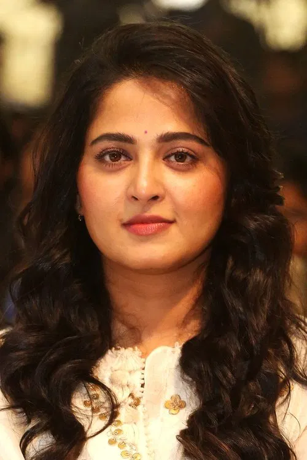

Anushka Shetty, often called the "Lady Superstar" of Tollywood, redefined the role of women in modern Telugu cinema. Though she began her career with glamorous roles, her transformation as a performer began with the iconic film Arundhati, where she proved that a female-led film could achieve massive success on its own.
She earned global recognition for her powerful portrayal of Queen Devasena in the Baahubali franchise. Her combination of grace, strength, and emotional depth won hearts across the world. Anushka is also admired for her dedication to roles, including gaining nearly 20 kg for the film Size Zero.
Known for her versatility, Anushka moves effortlessly between action films, historical epics, fantasy dramas, and performance-driven cinema. Her disciplined lifestyle, yoga background, and selective film choices have earned her immense respect in the Telugu Film Industry.
| Actress Profile: Anushka Shetty | ||
|---|---|---|
| Full Name | Sweety Shetty |  |
| Born | November 7, 1981 (Age 44) | |
| Birthplace | Mangalore, Karnataka, India | |
| Nicknames | Lady Superstar, Sweety, Devasena | |
| Occupation | Actress, Yoga Instructor | |
| Debut Film | Super (2005) | |
| Notable Films |
Arundhati, Vedam, Baahubali (1 & 2), Rudhramadevi, Bhaagamathie |
|
| Upcoming Projects | Ghaati (2025/2026), Kathanar | |
| Height | 1.78 m (approx. 5'10") | |
| Education | Bachelor of Computer Applications (BCA) | |
| Awards | 3 Filmfare Awards South, 2 Nandi Awards, Kalaimamani (Tamil Nadu) | |
| For More Info | Click here to know more about Anushka Shetty | |